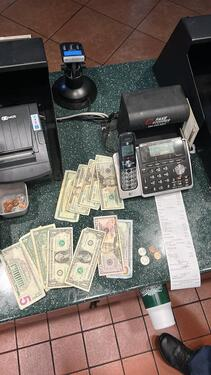
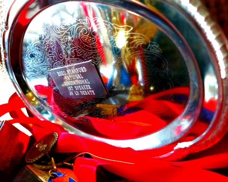
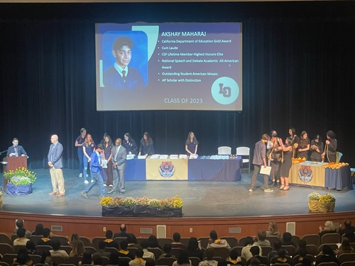
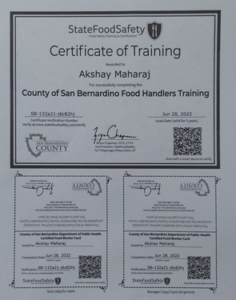
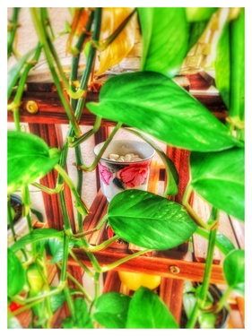
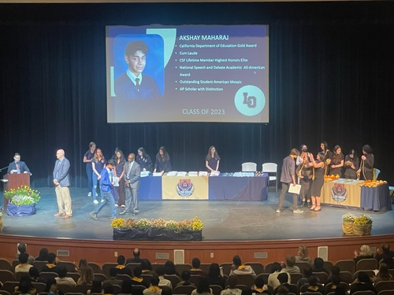
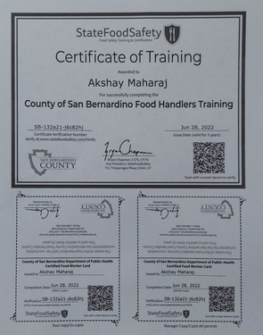
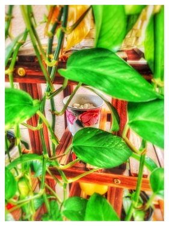

Shay Maharaj
I’m currently a first-year of sophomore status at the University of Riverside, California, studying for my Bachelor of Science in Psychology with plans of going to medical school and through residency afterwards in order to become a psychiatrist. Although I am proficient in STEM fields, I do not neglect the humanities, using them to develop leadership and communications skills.
In high school I took 10 AP exams and passed all but one of them with fives, the only exception being a four. I graduated high school with a weighted GPA of 4.6 and unweighted GPA of 3.97, all while competing with my debate team in my spare time. Over my four years of competition I won many awards in my event, earning my place among the top 4 in my state and the top 50 nationally. During the summers after my junior and senior years, I worked at McDonalds and Wingstop respectively to save for college expenses.
My transition to college has been smooth, with me currently being on track to start from a 4.0 GPA. I’m doing well in all my classes currently, so I’ve decided to take on some side projects. Since the beginning of my fall quarter, I’ve already volunteered as a judge for my high school debate team for a total of eight days, which covers every single tournament they’ve had so far. It’s nice to see how far the underclassmen I mentored have come now that I’ve graduated and am no longer around. Recently, I also signed up to participate in a study by Brain Games UCR, which involves me dedicating an hour of my time to taking memory tests. These are scheduled M-F, even though I only have classes Tuesday, Thursday and Friday. Many would’ve missed sessions due to this inconvenience, but I attended nonetheless and commuted daily. When I take on a job or task, I see it through to completion.
By blending hard work and dedication with intuitive and critical thinking, I’m excellent at accomplishing tasks given to me and providing advice when requested. Although I will capably step up as a leader when I find that nobody else is willing to or as capable, I possess the humility to step back and let someone else take the reins for the sake of the group. For this reason, I have generally positive reputations amongst all the communities that know me. Some of them might be intimidated at first, but I quickly show that I’m just as approachable as anyone else. That, after all, is what separates the capable and adaptable from the talented but hard-headed.
I can guarantee that I will be a valuable asset to your team. If our interests align and we can mutually benefit from each other’s assistance, I encourage you to contact me with any opportunities. You will not regret your decision. I will do my best to get back to you as soon as possible so we can make arrangements to further discuss cooperation.
Experience
High School
• Top 4 in State and Top 50 Nationally for NSDA LD
• Volunteer Work Through CSF and Debate Team
• Peer Mentoring and Role Modeling for Underclassmen
Cashier
• Responsible for checking out customers
• Shared Larger Duties w/ Crew
Teaching Assistant
• Washing and collecting lab equipment for AP Chemistry
• Reviewed and graded student work
• Beta-tested planned material to help promote student education
• TA'd for over 400 students each academic semester
Education
Los Osos High School
College Board
University of California Riverside
Portfolio






 
